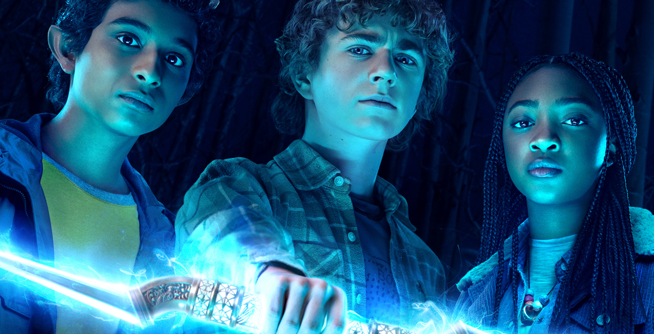
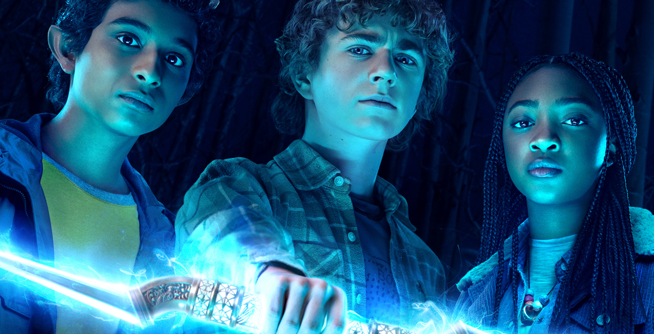

Percy Jackson é uma série da Disney onde fazem uma adaptação da coleção de livros do autor Rick Riordan.
Os livros já tiveram uma adaptação antes em formato de longa metragem onde foi decepcionante, então essa série carregava o fardo de ter uma expectativa baixa pelo público.
Em nossa perspectiva acabamos sendo surpreendido pela qualidade, o formato de série encaixa muito mais para uma adaptação pois o livro passa em muitos cenários e contextos diferentes para abordar em um filme, atuação está boa e convincente, e os efeitos especiais estão com uma ótima qualidade.
Por outro lado, a série pode acabar sendo confusa ou corrida para quem não leu os livros, mudando de cenário muito rapidamente e podendo se perder muito facilmente, o final é bem pouco emocionante transparecendo nenhuma emoção ou empolgação ao meu ver, acaba sendo mais uma série para assistir almoçando e nada mais, é uma série mediana.